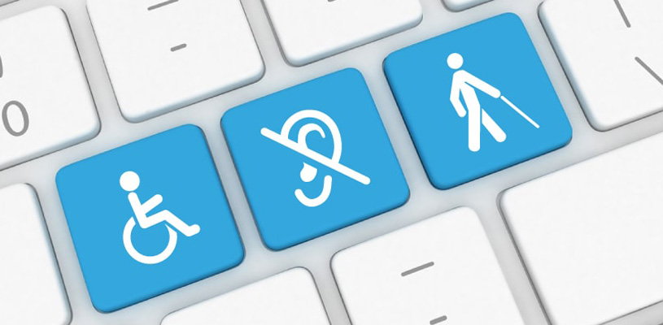

1 Concepto de “Accesibilidad Web”:
1-1 Concepto y objetivos de la Accesibilidad Web:
Accesibilidad web
La accesibilidad web son una serie de herramientas y tecnologías que permite las personas que posean
alguna
discapacidad puedan usarlas, es decir que todos los usuarios puedan percibir, comprender, navegar,
interactuar y contribuir con la pagina web.

Limitaciones de acceso a la web
Los componentes principales de una página web son:
- Deficiencias visuales
- Deficiencias auditivas
- Deficiencias motrices
- Deficiencias cognitivas y de lenguaje
2 - El consorcio World Wide Web (W3C)
2-1 - Qué es, qué estructura tiene y cuáles son sus objetivos
es un comité que se dedica a implementar tecnologías uniformes en el uso y desarrollo de Internet. El organismo fue fundado en el MIT en Cambridge, su fundador es Tim Berners-Lee.La estructura que tiene W3C está dividida en miembros, equipos y oficinas.Los objetivos que tiene son establecer unas directrices para el desarrollo de aplicaciones web de que forma que se mantenga la idea básica de la World Wide Web.